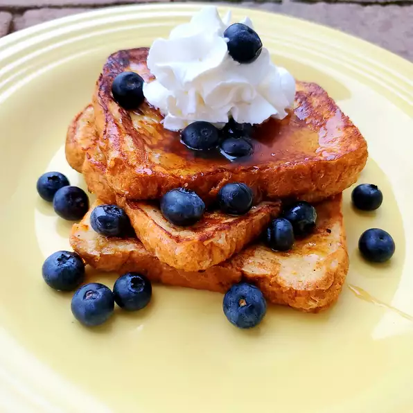

Lemon Vanilla French Toast

Perfect for breakfast with some extra oomf to wake you up
This is pretty easy to make, all we need is bread, some lemon and a few eggs!
Ingredients
- 1/3 cup half and half
- 5 large egg whites
- 2 tbsp brown sugar
- 1/4 tsp vanilla extract
- 1 tsp lemon juice
- a pinch of salt
- 2 tbsp butter
- 6 slices of bread
- 1/2 cup maple syrup
- 3 tbsp whipped cream
Method
- Combine half-and-half, egg whites, confectioners' sugar, brown sugar, vanilla, lemon extract, and salt in a bowl; whip together with a whisk or electric whisk until well blended, about 30 seconds. Pour mixture into a large, flat container.
- Put one bread slice in the container and flip so it is coated on both sides, almost saturated.
- Put one bread slice in the container and flip so it is coated on both sides, almost saturated.
- Serve French toast with maple syrup and add whipped cream on top.
Nutrition
Per Serving: 464 calories; protein 10.8g; carbohydrates 76.7g; fat 13.2g; cholesterol 32.6mg; sodium 648.9mg